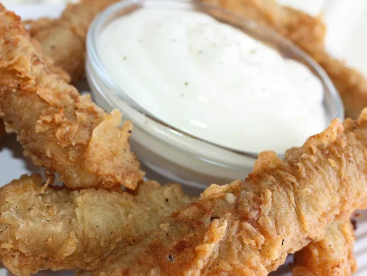

Delicious Dish

Description
This dish is a mouthwatering combination of flavors that will tantalize your taste buds. It features a perfect balance of ingredients and is sure to impress your family and friends.
Ingredients
- ⅓ cup vegetable oil
- 1 pound round steak
- 2 eggs
- ½ cup milk
- salt and pepper to taste
- 1 ½ cups all-purpose flour for coating
Steps
- Step 1:Tenderize steak by pounding with a mallet. Cut into 3 inch long strips.
- Step 2:Combine egg, milk, salt and pepper in a shallow dish, whisk until well blended.
- Step 3:In a large skillet over medium heat, heat 1/3 cup oil (or just enough to cover the bottom of the pan).
- Step 4:Coat steak pieces in flour. Shake off excess. Then dip in the egg mixture and again in flour.
- Step 5:Coat steak pieces in flour. Shake off excess. Then dip in the egg mixture and again in flour.